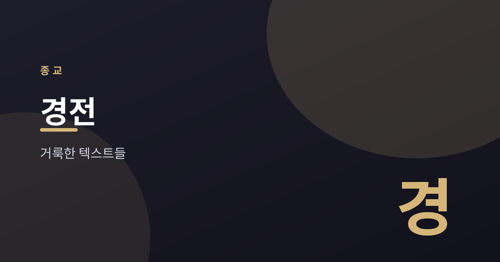
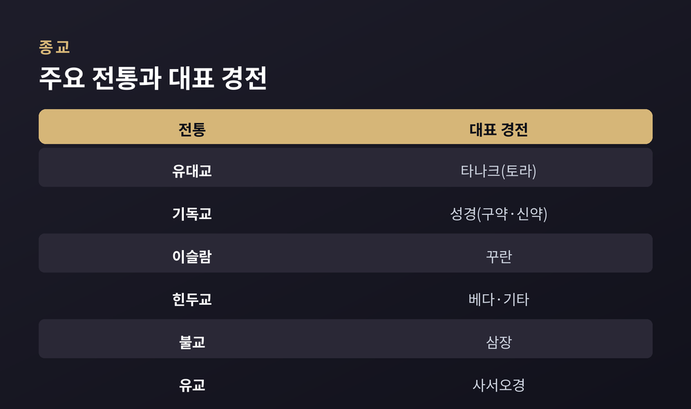
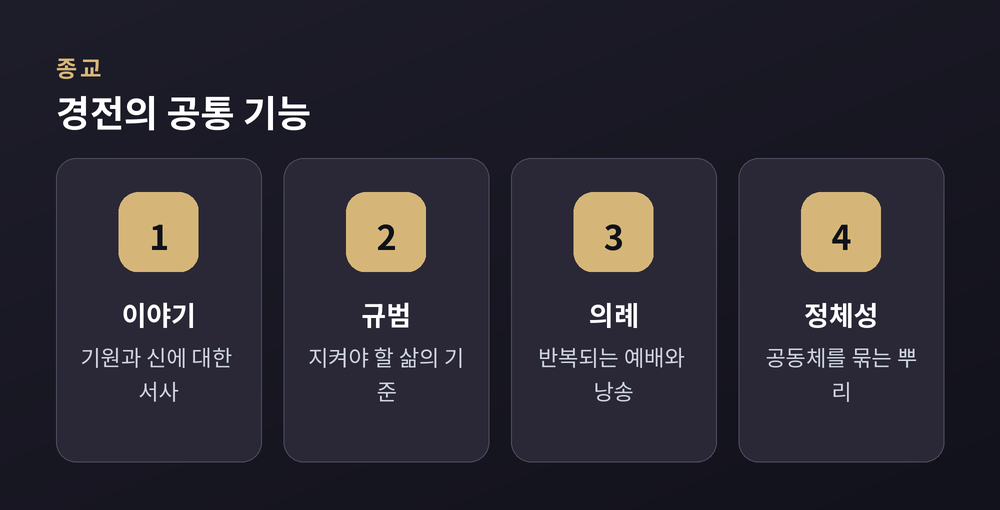
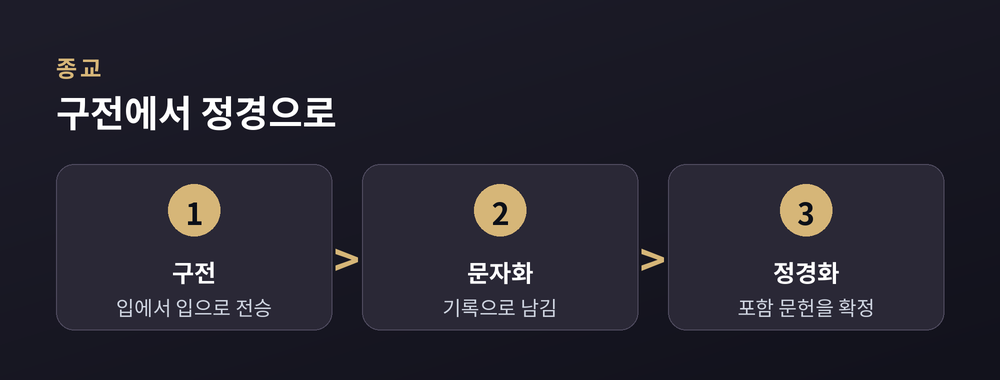
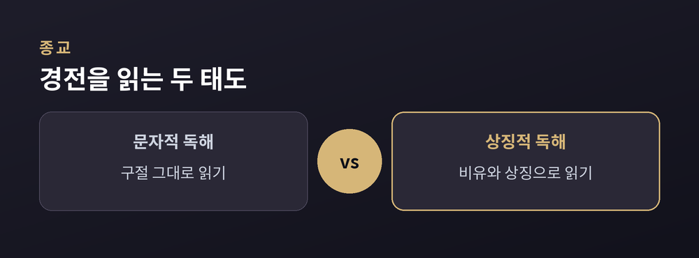

인류가 남긴 거룩한 텍스트들

경전은 오랜 세월 공동체가 지켜 온 텍스트입니다.
그 안에는 이야기와 규범, 의례가 함께 담겨 있습니다.
이번 글에서는 세계 주요 전통의 대표 경전을 균형 있게 살펴봅니다.
경전은 공동체가 권위를 부여한 텍스트를 뜻합니다.
신에 대한 이야기, 지켜야 할 규범, 반복되는 의례가 함께 실립니다.
세대에서 세대로 전승되며 삶의 기준이 되어 왔습니다.
경전의 지위는 전통마다 다릅니다.
어떤 공동체는 계시로, 어떤 공동체는 지혜의 축적으로 받아들입니다.
어느 쪽이 옳은지를 여기서 판단하지는 않습니다.
전통마다 경전의 형태와 강조점이 다릅니다.
아래 표는 대표적인 예를 간략히 정리한 것입니다.

| 전통 | 대표 경전 | 특징 |
|---|---|---|
| 유대교 | 타나크(토라 포함) | 율법과 역사, 예언 |
| 기독교 | 성경(구약·신약) | 복음과 서신 |
| 이슬람 | 꾸란(하디스 참고) | 계시의 낭송 |
| 힌두교 | 베다·우파니샤드·기타 | 찬가와 사색 |
| 불교 | 삼장(팔리 경전 등) | 가르침과 계율 |
| 유교 | 사서오경 | 윤리와 정치 |
전통은 달라도 경전의 기능에는 공통점이 있습니다.
크게 네 가지로 나누어 볼 수 있습니다.

경전은 무엇을 믿는지를 넘어 어떻게 살지를 함께 안내합니다.
많은 경전은 처음에 입에서 입으로 전해졌습니다.
이후 문자로 기록되고, 오랜 논의를 거쳐 정경으로 확정됩니다.
정경화는 어떤 문헌을 포함할지 정하는 과정입니다.

경전은 번역을 거치며 새로운 언어권으로 퍼졌습니다.
번역은 종종 그 지역의 문자와 문학에 큰 영향을 남겼습니다.
동시에 원문과 번역 사이의 간극이라는 과제도 남깁니다.
읽는 태도 또한 하나가 아닙니다.
같은 구절을 문자 그대로 읽는 입장과 상징으로 읽는 입장이 함께 존재합니다.

두 입장은 오랜 세월 나란히 이어져 왔습니다.
어느 쪽이 유일한 정답이라고 말하기는 어렵습니다.
경전을 함께 읽는다는 것은 이런 결을 헤아리는 일이기도 합니다.